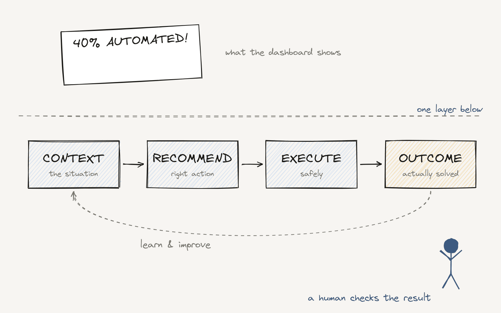

Stop Counting What AI Automates. Measure Outcomes.

If your AI strategy measures automation, you may be measuring the wrong thing.
Most AI programs report numbers like:
- tasks automated
- AI conversations handled
- handling time saved
- agents deployed
- % of work done with no human involved
Useful numbers. But none of them tell you if the business got better.
The 40% problem
Imagine an AI agent that resolves 40% of customer contacts with no human involved. Great headline.
But that number hides a lot:
- Some of those customers come back because the problem wasn't really fixed.
- The agent may have created wrong records.
- Employees may spend more time fixing AI work than they save.
Automation happened. That doesn't mean the business improved.
Measure the result, not the activity
In customer service, that means:
- more problems solved on the first contact
- fewer repeat contacts
- happier customers
- faster resolution of hard cases
- more productive employees
- lower cost per problem actually solved
A system that finishes a task is not always a system that solves a problem. And a system that removes people is not always a better experience.
Closing the loop
Here is the full model from this series:
Context → Recommendation → Execution → Outcome
- Context: understand the situation.
- Recommendation: help people pick the right action.
- Execution: turn the decision into progress, safely.
- Outcome: check if the value really showed up.
The last step is the one most teams skip. Without a feedback loop that checks if the problem was solved and the customer benefited, AI gets very efficient at repeating the wrong thing.
And notice what the Brazil rule does here. When a customer chooses a human, that's a signal. If people keep opting out of your AI, your automation rate looks fine, but your outcome is telling you something.
The measure of AI maturity is not how much work we automate. It's how much better the work gets done.
Closing the series
The Human Option is not about choosing between people and technology. It's about designing systems where AI brings the context, supports the decision, acts responsibly, and helps people deliver better results.
The opportunity is not to automate today's process. It's to rethink how the work should happen.